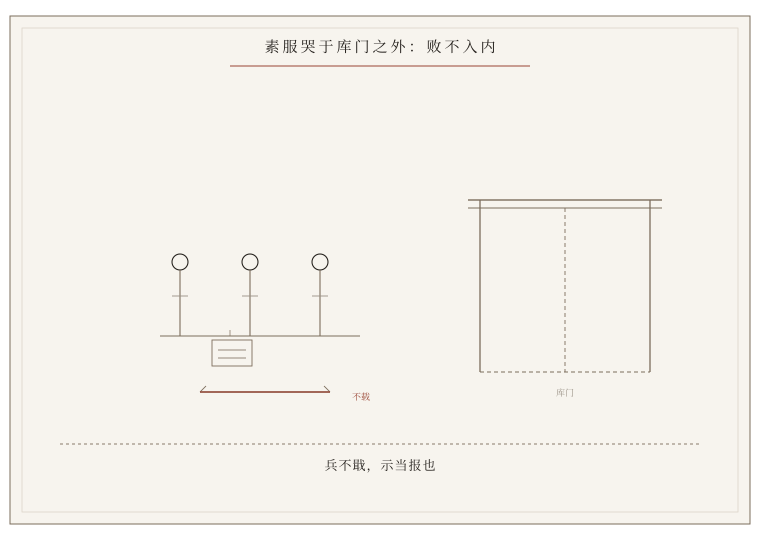

檀弓下 · 四·七十 · 第 395 课
军有忧，则素服哭于库门之外，赴车不载櫜韔。
说什么事：军队败了，就穿素服在库门之外哭；回国报败的车，甲不装袋、弓不入囊，就那么敞着载回来。
落在哪一层：以「耻」为界。败要哭，但哭在门外；败要报，但报时不许装。
为何编在此位：上节以讳定名，此节以哭定耻。名与耻，皆礼所不许含糊者。
【经】军有忧，则素服哭于库门之外，赴车不载櫜韔。
【注】忧，谓为敌所败也。素服者，缟冠也。／兵不戢，示当报也。以告丧之辞言之，谓还告于国。櫜，甲衣。韔，弓衣。
【疏】此一节论军败当报之事。○「赴军不载櫜韔」者，军既有忧，从军赴国之车，但露载其甲及弓，示有报敌之意，故甲则不以櫜戢之，弓则不以韔戢之，故注云「兵不戢，示当报也」。○注「以告」至「弓衣」。○正义曰：案《春秋左氏传》祸福称「告」，崩薨称「赴」，今军败应称「告」而称「赴」，故云「以告丧之辞言之」。案《诗》云「载櫜弓矢」，《春秋传》云「右属櫜鞬」，皆以櫜为韬弓，此注为「甲衣」者，以下「韔」文，「韔」既是弓衣，故以「櫜」为甲衣。
军有忧 军为敌所败。
素服 缟冠、素衣，凶服之轻者。
库门 宫之外门。
赴车 自军中驰归报败之车。「赴」本为崩薨之辞。
櫜 甲衣。亦有以櫜为韬弓者，注疏自辨。
韔 弓衣。
不载 不装袋而露载。
戢 收藏、聚敛。
军队战败，就穿素服在库门之外哭；回来报败的车，甲不装袋、弓不入囊，敞着载回来。
此章两句，一哭一载。
哭有处：库门之外，不入内。载有体：不装袋，不收敛。
两句合看，只一句：败要认，认了还不许收兵。
第一层 「军有忧」的「忧」字 注云「为敌所败也」。
礼不肯直说「败」，说「忧」。 这不是讳败，是给败一个可承受的名——「忧」是尚可补救的，「败」是终局。
第二层 素服与缟冠 注云「素服者，缟冠也」。缟是生绢，素是未染——凶服之最轻者。
败军之哭，用最轻的凶服。 礼在此有一层极冷的体贴：败非丧亲，不得用重服；然亦非吉，故不得用常服。
第三层 哭在库门之外 库门是宫之外门，百官所在。
哭于门外，不入内。 门内是庙与朝，败不入庙。
这一道门槛，把「耻」放在了国家的门外，而不是某一个人的脸上。
第四层 「不载櫜韔」 注云「兵不戢，示当报也」——甲不裹、弓不装，是「还要再打」的姿态。
礼不许败军把兵器收好。 收起兵器的军队，等于承认此事已了。
第五层 「赴」字的用法 注云「以告丧之辞言之」——报崩薨叫「赴」，报祸福叫「告」。此用「赴」，是把败当丧事报。
一个字的选择，就把国耻列进了丧礼的类目。 疏特为标出，非细故也。
第六层 櫜之两解 注以櫜为甲衣；疏引《诗》《春秋传》，谓櫜亦为韬弓。
郑于此取「甲衣」，是为与「韔（弓衣）」相对成文，非不知其有韬弓之训。 注疏并存两解而不强一，此亦礼家之慎。
第七层 与上节对读 上节以「讳」为其名，此节以「不载」为其形。
名改其称呼，形改其装载。礼于耻，从名到物，一并管住。
与今日何干 今之败事，多先「收拾干净」再报：成绩照旧、措辞照旧、兵器入袋。
此章给一句：认败的姿态，比认败的话更难装。
| 左 | 右 |
|---|---|
| 军有忧 | 为敌所败 |
| 忧 | 不直言败 |
| 素服 | 缟冠，凶之轻 |
| 哭于库门之外 | 不入内 |
| 库门 | 宫外门，百官所在 |
| 赴车 | 还告于国 |
| 不载櫜韔 | 兵不戢 |
| 示当报 | 尚有一战 |
| 赴 | 以丧辞言之 |
画一幅简略的城门外场景，视点平视略俯。画面右侧画一座城门：两根立柱，柱上一道横梁，梁下一道门限，门内一片空，不画人。门外左侧画三人并立，皆素白衣、低首，双手垂于身前。三人之前的地面上横放两件兵器：一支弓，弓身裸露不套囊；一副甲，甲片散开不裹。弓与甲之间画一条短横线，示「不载」之意。不画旗帜。不画文字。赭色只用在那支弓的弦上。
